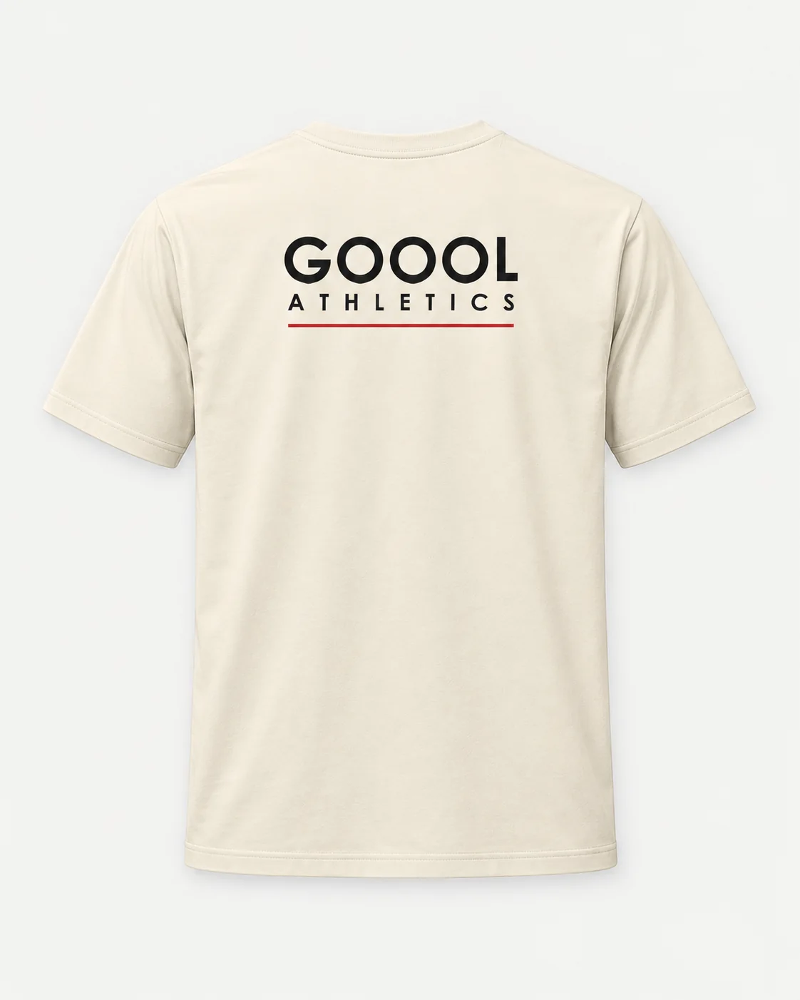

GOOOL / REVISION 2 / GARMENT EXECUTION
GOOOL Athletics Minimal Club Tee
Natural
Bella+Canvas 3010 · Supplier color candidate: Natural · S / M / L / XL / XXL
Prepared design target — supplier proof and physical sample still required. These diagrams establish print placement; they do not certify blank pattern, fit, color, label service or supplier availability. Wearer-left is viewer-right. Collar measurements begin at the bottom seam and end at the visible artwork, not its transparent canvas.
Front
artwork CENTER 3.5in wearer-left of body centerline (viewer right); 3 in — top of visible artwork below bottom collar seam
Back
body centerline; 2.75 in — top of visible artwork below bottom collar seam
| Face | Visible width × height | Anchor offset | Dimension basis |
|---|
| front | 3.500 × 1.103 in
88.90 × 28.02 mm | 3 in
76.20 mm | sample_specification_target |
| back | 12.000 × 4.630 in
304.80 × 117.60 mm | 2.75 in
69.85 mm | sample_specification_target |
Method: DTF / transfer; supplier process confirmation required. Use spec.json for exact artwork files, pixel insets, tolerances and source hashes. Confirm each offered size's print area; record any scaling instead of silently changing width.
Brand label — flat art now supplied

Nominal one-inch square. Enlarged preview. Three Os; white/red/white separated underline; ATHLETICS beneath. Full-color service and interior placement require approval on this blank. One-inch woven detail needs artist resolution. The two-inch comparison file is not an automatic size substitution.
Label production requirementsOriginal mockup intent — concept references

Concept reference; verify blank construction, color and print placement.

Concept reference; verify blank construction, color and print placement.
Before a customer order
Complete supplier and per-size verification and physical sample acceptance. Match the actual blank, art, print size, color, label and product photography. Keep sales/fulfillment gates until the recorded checks pass.